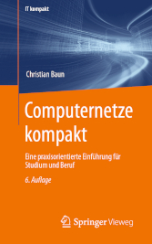

|
|
Jump to the page in German language
|


|
Computer networks allow to connect individual computers systems for communication and resource sharing. Communication via computer networks is realized via different protocols of different layers of reference models (OSI reference model, TCP/IP reference model, hybrid reference model). At the beginning of the course, an introduction to the required fundamentals of the computer sciences and computer networks takes place. Next, the protocols and their classification into established reference models is discussed. The main focus of the course is to explain the way, the data is transmitted through the different protocol layers and via different transmission media. The exercise sessions in WS2324 are supervised in collaboration with Ms. Wei Yin Shing. The course (lectures, exercises and exam) is held in English language. All slide sets and exercise sheets are available in English and in German language. The content of the English and German slide sets and exercise sheets is identical. A list of technical terms provides this page. The slide sets are the basis for the sixth edition of the German-language book Computernetze kompakt, was published in autumn 2022 by Springer Vieweg. ISBN: 978-3-662-65362-3 Also, a bilingual (English-German) edition exists Computer Networks / Computernetze, which was published in autumn 2022 (second edition) by Springer Vieweg. ISBN: 978-3-658-38892-8
|
| Semester | Exams | Time limit | University | Sample solutions | ||
|---|---|---|---|---|---|---|
| WS2223 | 90 Minutes | Frankfurt UAS | ||||
| WS2021 | 90 Minutes | Frankfurt UAS | ||||
| WS1920 | 90 Minutes | Frankfurt UAS | ||||
| WS1819 | 90 Minutes | Frankfurt UAS | ||||
| WS1718 | 90 Minutes | Frankfurt UAS | ||||
| SS2017 | 90 Minutes | Frankfurt UAS | ||||
| WS1617 | 90 Minutes | Frankfurt UAS | ||||
| SS2016 | 90 Minutes | Frankfurt UAS | ||||
| WS1516 | 90 Minutes | Frankfurt UAS | ||||
| SS2015 | 90 Minutes | Frankfurt UAS | ||||
| WS1415 | 90 Minutes | FH Frankfurt | ||||
| SS2014 | 90 Minutes | FH Frankfurt | ||||
| WS1314 | 90 Minutes | FH Frankfurt | ||||
| SS2012 | 90 Minutes | HS Darmstadt | ||||
The best way to reach me is via email: christianbaun@fb2.fra-uas.de
|
Prof. Dr. Christian Baun Frankfurt University of Applied Sciences (1971-2014: Fachhochschule Frankfurt am Main) Faculty of Computer Science and Engineering Last updated: July 27th 2023 |
|